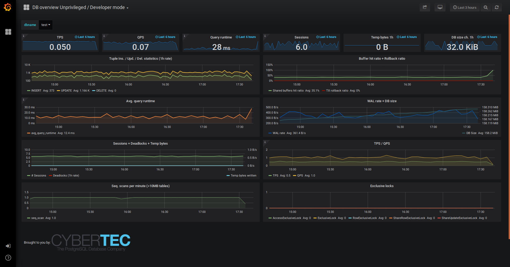

Preparing Databases
Effects of monitoring
- Although the "Observer effect" applies also for pgwatch, no
noticeable impact for the monitored DB is expected when using
Preset configs settings, and given that there is some normal load
on the server anyway and the DB doesn't have thousands of tables.
For some metrics though can happen that the metric reading query
(notably
stat_statementsandtable_stats) takes some tens of milliseconds, which might be more than an average application query. - Default Postgres statement timeout is 5s for entries inserted via the Web UI / database directly.
Basic preparations
As a base requirement you'll need a login user (pg_monitor
suggested) for connecting to your server and fetching metrics.
Though theoretically you can use any username you like, but if not using "pgwatch" you need to adjust the "helper" creation SQL scripts (see below for explanation) accordingly, as in those by default the "pgwatch" will be granted execute privileges.
CREATE ROLE pgwatch WITH LOGIN PASSWORD 'secret';
-- For critical databases it might make sense to ensure that the user account
-- used for monitoring can only open a limited number of connections
-- (there are according checks in code, but multiple instances might be launched)
ALTER ROLE pgwatch CONNECTION LIMIT 5;
GRANT pg_monitor TO pgwatch;
GRANT CONNECT ON DATABASE mydb TO pgwatch;
GRANT EXECUTE ON FUNCTION pg_stat_file(text) to pgwatch; -- for wal_size metric
GRANT EXECUTE ON FUNCTION pg_stat_file(text, boolean) TO pgwatch;
For most monitored databases it's extremely beneficial (for troubleshooting performance issues) to also activate the pg_stat_statements extension which will give us exact "per query" performance aggregates and also enables to calculate how many queries are executed per second for example. In pgwatch context it powers the "Stat statements Top" dashboard and many other panels of other dashboards. For additional troubleshooting benefits also the track_io_timing setting should be enabled.
-
Make sure the Postgres contrib package is installed (should be installed automatically together with the Postgres server package on Debian based systems).
- On RedHat / Centos:
yum install -y postgresqlXY-contrib - On Debian / Ubuntu:
apt install postgresql-contrib
- On RedHat / Centos:
-
Add
pg_stat_statementsto your server config (postgresql.conf) and restart the server. -
After restarting activate the extension in the monitored DB. Assumes Postgres superuser.
Metrics initialization
Some rare metrics are not runable out-of-the-box on Postgres and need some installed helper functions, extensions or database objects before they can be used. For example, it is impossible to obtain the CPU usage statistics with a regular SQL query. But it is possible to get this system information with some untrusted procedure language like PL/Python.
That's why some metrics have a special init section in their definitions.
Some init sections might contain CREATE FUNCTION statements that
create helper functions in the monitored database. Some might contain
CREATE EXTENSION or other preparation steps.
To examine the init section of a metric, you can use the following command:
You may put multiple metric or preset names in the command line. The output will contain the concatenated init sections of the specified metrics or presets.
For example, to check the init section of the cpu_load metric:
$ pgwatch metric print-init cpu_load
-- cpu_load
BEGIN;
CREATE EXTENSION IF NOT EXISTS plpython3u;
CREATE OR REPLACE FUNCTION get_load_average(OUT load_1min float, OUT load_5min float, OUT load_15min float) AS
$$
from os import getloadavg
la = getloadavg()
return [la[0], la[1], la[2]]
$$ LANGUAGE plpython3u VOLATILE;
GRANT EXECUTE ON FUNCTION get_load_average() TO pgwatch;
COMMENT ON FUNCTION get_load_average() is 'created for pgwatch';
COMMIT;
Helper functions in pgwatch context are standard Postgres stored
procedures, running under SECURITY DEFINER privileges. Via such
wrapper functions one can do controlled privilege escalation, i.e.
to give access to OS-level metrics.
Since pgwatch operates with a "least privilege" principle, it shouldn't automatically create needed helper functions on the monitored database.
So to create the helper functions, you need to execute init commands under
the appropriate account, usually a superuser account. The easiest way to do it
is just pipe the output of the pgwatch metric print-init command to the
psql command:
Info
Here in all examples we assume that we are using the built-in metrics. But you can also use your own custom metrics. In this case, you need to provide the appropriate command-line options, e.g.
Also when init metrics make sure the search_path is
at defaults or set so that it's also accessible for the monitoring role
as currently neither helpers nor metric definition SQLs don't assume
any particular schema and depend on the search_path
including everything needed.
Hint
If it can be foreseen that a lot of databases will be created on some instance it might be a good idea to roll out the helpers directly in the template1 database, so that all newly created databases will get them automatically.
PL/Python helpers
PostgreSQL in general is implemented in such a way that it does not know too much about the operating system that it is running on. This is a good thing for portability but can be somewhat limiting for monitoring, especially when there is no system monitoring framework in place or the data is not conveniently accessible together with metrics gathered from Postgres. To overcome this problem, users can also choose to install helpers extracting OS metrics like CPU, RAM usage, etc. so that this data is stored together with Postgres-native metrics for easier graphing / correlation / alerting. This also enable to be totally independent of any System Monitoring tools like Zabbix, etc., with the downside that everything is gathered over Postgres connections so that when Postgres is down no OS metrics can be gathered also.
Note though that PL/Python is usually disabled by DB-as-a-service providers like AWS RDS for security reasons.
# first install the Python bindings for Postgres
apt install postgresql-plpython3-XY
# yum install postgresqlXY-plpython3
pgwatch metric print-init cpu_load | psql -d mydb
# psutil helpers are only needed when full set of common OS metrics is wanted
apt install python3-psutil
pgwatch metric print-init psutil_cpu psutil_mem psutil_disk psutil_disk_io_total | psql -d mydb
Notice on using metric fetching helpers
- Helpers are mostly needed only for PL/Python metrics getting OS statistics.
- For gathering OS statistics (CPU, IO, disk) there are helpers and metrics provided, based on the "psutil" Python package... but from user reports seems the package behaviour differentiates slightly based on the Linux distro / Kernel version used, so small adjustments might be needed there (e.g. to remove a non-existent column). Minimum usable Kernel version required is 3.3.
- When running the gatherer locally one can enable the
--direct-os-statsparameter to signal that we can fetch the data for the defaultpsutil*metrics directly from OS counters. If direct OS fetching fails though, the fallback is still to try via PL/Python wrappers. - In rare cases when some "helpers" have been installed, and when
doing a binary PostgreSQL upgrade at some later point in time via
pg_upgrade, this could result in error messages thrown. Then just drop those failing helpers on the "to be upgraded" cluster and re-create them after the upgrade process.
Info
If despite all the warnings you still want to run the pgwatch
with a sufficient user account (e.g. a superuser) you can also
use the --create-helpers parameter to automatically create all
needed helper functions in the monitored databases.
Running with developer credentials
For developers with no means to install any wrappers as superuser, it's
also possible to benefit from pgwatch. For such use cases the
"unprivileged" preset metrics profile and the according "DB overview
Unprivileged / Developer"

are a good starting point as it only assumes existence of
pg_stat_statements (which should be available by all cloud
providers).
{kind=link}
Different source types explained
When adding a new "to be monitored" entry a source type needs to be selected. Following types are available:
postgres
Monitor a single database on a single Postgres instance. Internally monitoring always happens "per DB" not "per cluster" though.
postgres-continuous-discovery
Monitor a whole (or subset of DB-s) of Postgres cluster / instance. Connection string needs to be specified and then the pgwatch daemon will periodically scan the cluster and add any found and not yet monitored DBs to monitoring. In this mode it's also possible to specify regular expressions to include/exclude some database names.
pgbouncer
Use to track metrics from PgBouncer's SHOW STATS command.
pgpool
Use to track joint metrics from Pgpool2's SHOW POOL_NODES and
SHOW POOL_PROCESSES commands.
patroni
Patroni is a HA / cluster manager for Postgres that relies on a DCS (Distributed Consensus Store) to store it's state. Typically, in such a setup the nodes come and go, and also it should not matter who is currently the master. To make it easier to monitor such dynamic constellations pgwatch supports reading of cluster node info from all supported DCSs (etcd, Zookeeper, Consul), but currently only for simpler cases with no security applied (which is actually the common case in a trusted environment).
patroni-continuous-discovery
As normal patroni DB type but all DBs (or only those matching the regex if any provided) are monitored.
patroni-namespace-discovery
Similar to patroni-continuous-discovery but all Patroni scopes (clusters) of an ETCD namespace are automatically monitored. Optionally regexes on database names still apply if provided.
Notice
All "continuous" modes expect access to "template1" or "postgres" databases of the specified cluster to determine the database names residing there.